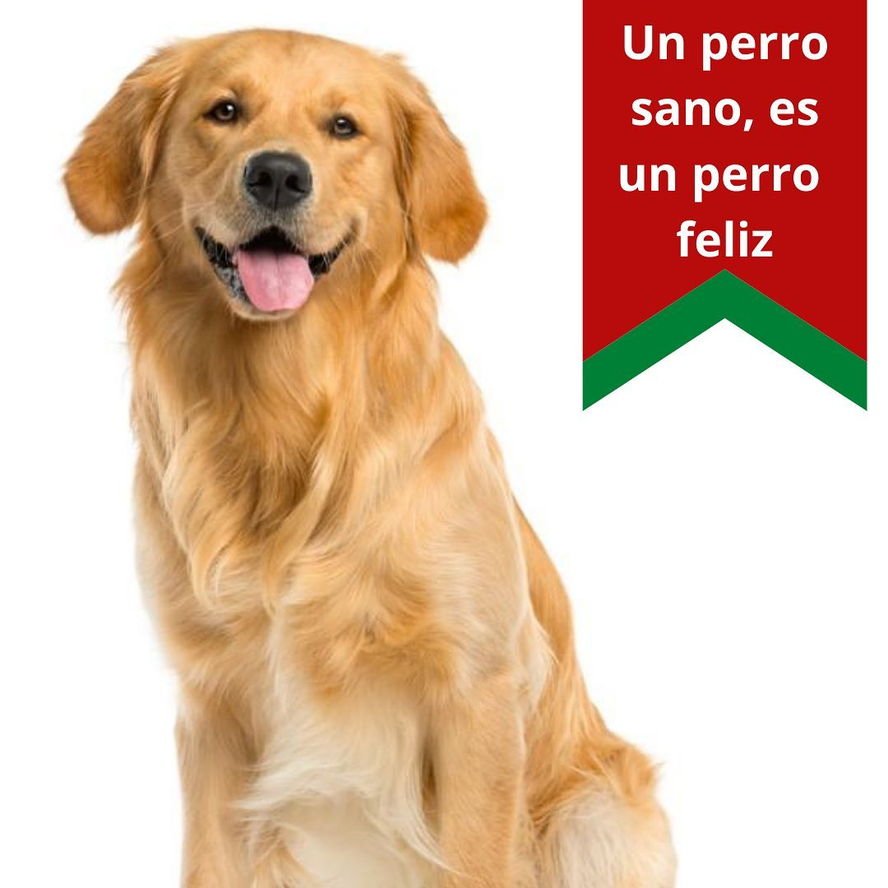
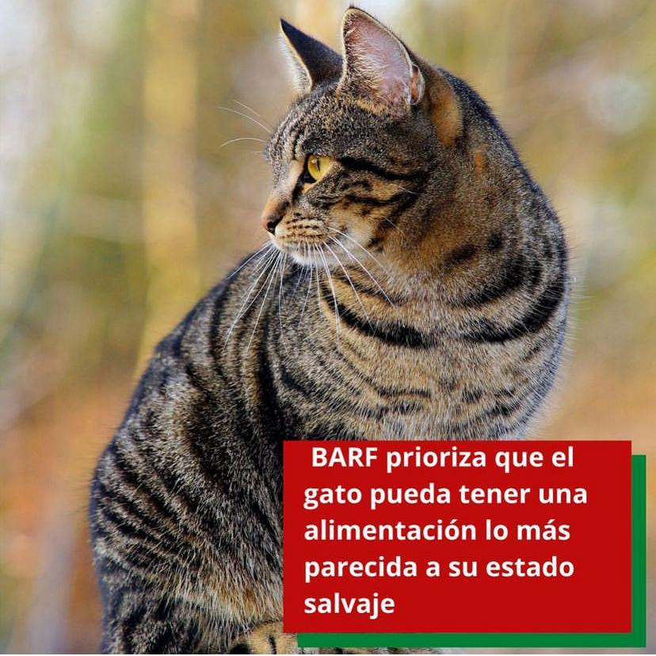

Nuestros kits para tu mascota
Kit para Perros
Kit para Gatos
- Carne Muscular: Aminoácidos esenciales, hierro, vitaminas(A,E,B1,B2,B12,B6), Zinc, Fósforo, Potasio, Calcio y Ácidos Grasos.
- Huesos Carnosos: Fuente de minerales, proteínas y lipidos. Remoción de placa bacterial y sarro. Ayuda a la liberación de endorfinas
- Verduras: Fibras (reemplazan las plumas y los pelos de las presas), promueve el transito gastrointestinal y aportan fitoquímicos.
- Víseras: Proteínas de alto valor biológico, es el proncipal aporte vitamínico de la ración, vitaminas K, E, B, A y D. Omega 3 y 6.
- Pescado: Yodo, Selenio y magnesio. Mayor contenido de Omega 3.
¿Que es la dieta BARF?
Es una dieta para perros y gatos 100% natural, sin procesos quimicos ni aditivos. Es una alimentación cruda,la cual considera las necesidades fisiológicas del animal, su actividad, su peso y edad. La Ración se prepara con alimentos frescos, verduras y carne.
¿Es apta para todos los perros y gatos?
Si, cualquier perro o gato puede consumirla sin importar su raza o edad. siempre la cantidad debe ser acorde al peso del animal y a su nivel de actividad.
¿Que beneficios tiene?
- Aumenta notablemente la energia de tu mascota.
- Reduce el olor corporal.
- El pelo se velve más fuerte, brilloso y sano.
- Los dientes se mantienen limpios, sin sarro y desaparece el mal aliento.
- Disminuye el volumen de sus heces.
- Aumenta la longevidad de tu mascota.